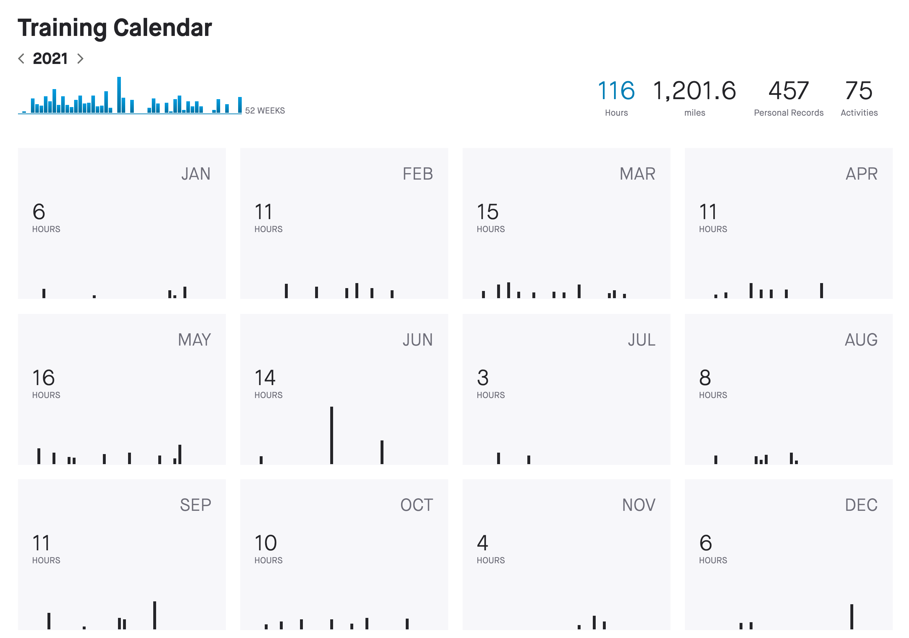

Comprehensive ride report from my successful Everesting Base Camp attempt on 16 January 2022.
The official rules are listed here, but can be boiled down to a few basic bullet points:
CEILING(29,032/[elevation gain of hill in feet]) times.
For the Base Camp version, the total elevation gain is half that of Everest, or 4424 m.
My training for this was abysmal. And relative to other cyclists' training for Base Camp/Everesting/10k, it was whatever the superlative of abysmal is. Like really bad.
I first conceived of personally Everesting sometime in late 2020, and based my 2021 training schedule on a late winter attempt. Training started out well. Riding was consistent, I was making obvious progress, and my legs were slowly getting under me. (Side note: my lungs have never been an issue during long efforts. My legs always fail first.)
But at some point in late summer/early fall, I got bored of training on my bikes and training stagnated despite me knowing the attempt was coming up. December rolled around and I was just too busy with life to do a proper attempt.
Outside of actual cycling (which is the best prep one can do, don't let anyone say otherwise), my leg work over the past few months has exclusively been rear-foot-elevated split squats and single-leg Romanian deadlifts. Rep ranges for each were 3-5x4-8x100-140 and 3x5-8x100-120, respectively and total weight added.
And that's pretty much it. Happy to provide specific training sessions over the year, just contact me.
I expected the morning weather to be pretty brutal (temperature of 34 °F / 1 °C and winds of 10 mph / 16 kph). Using "be bold, go cold" adage I've abided by my entire life, I was rocking:
My favorite shirt, the shorts, and socks stayed on the entire time and were never replaced.
Food was pretty straightforward and was kindly supplemented mid-ride with some Clif Kids Z Bars:
My phone battery is notoriously unreliable (or maybe I'm just bad at keeping it charged, but let's go with the former), so I brought enough portable chargers to power my phone until the end of time:
My phone was mounted to my handlebars for easy access/listening and the portable charger that was in use was in the bike's pouch (mounted between the top tube and down tube).
The Ripley's tires were pressurized to 35 psi and suspension locked out.

Everybody has a plan until they get punched in the mouth
And boy, did I get punched in the kisser.
Morning of I was up at 3:30am to load the car and get on the road. I got dropped off and began the effort around 4:40am in the dead of morning. Nobody was around: I didn't see car headlights or hear anything person-related until 7:00-7:30am-ish. It was just me for those couple of hours.